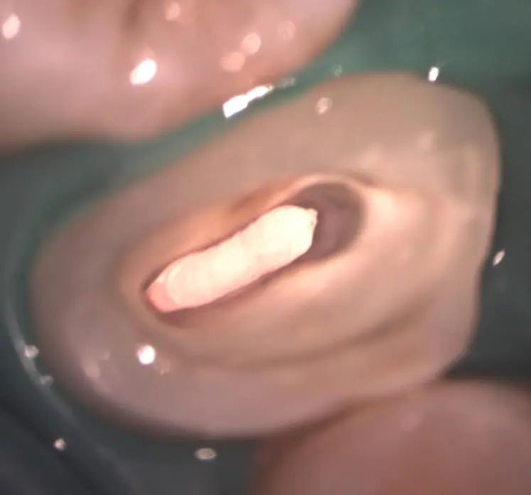
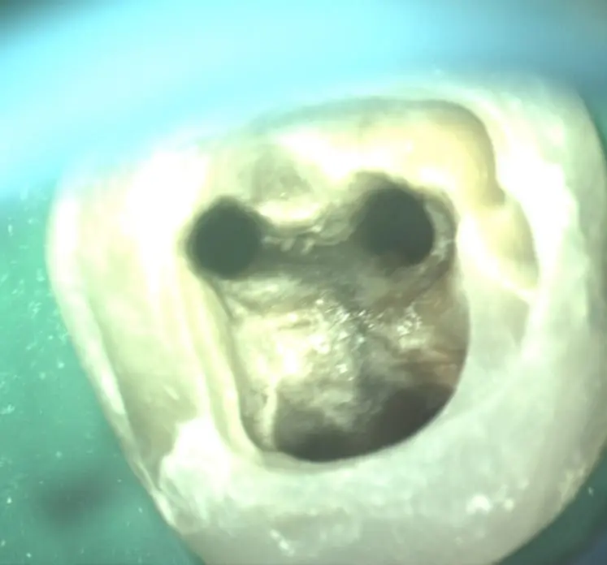
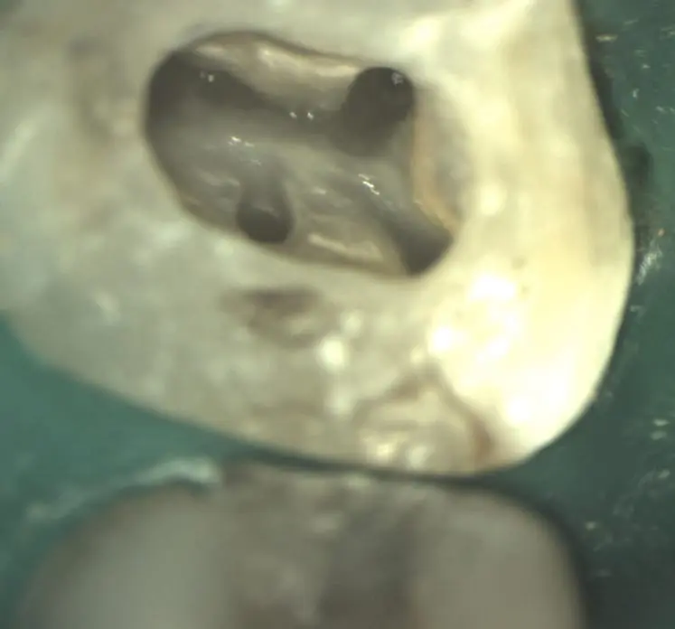
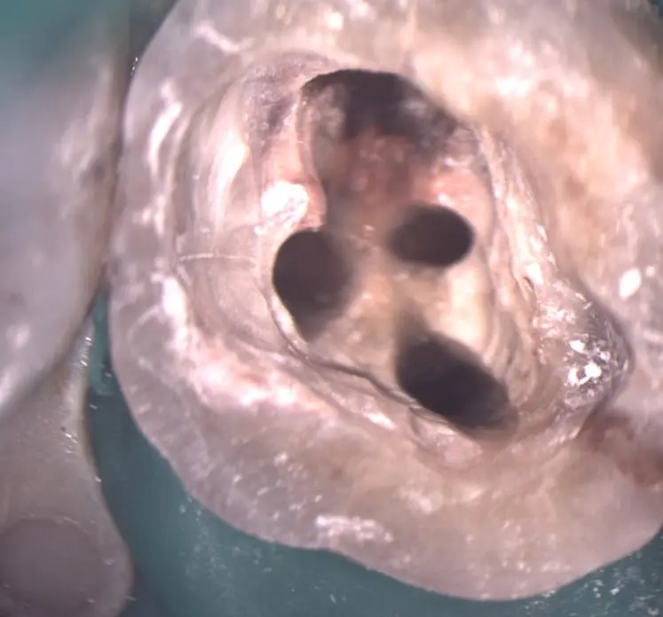
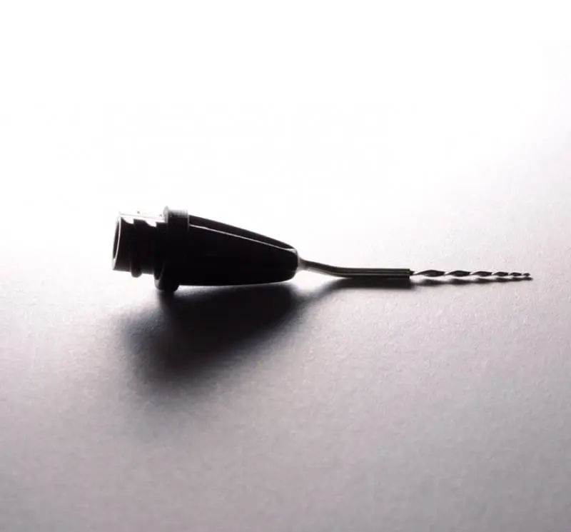
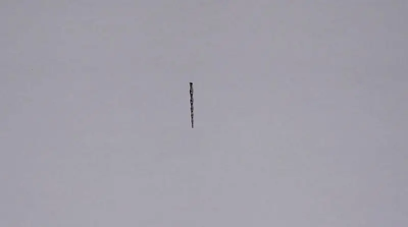
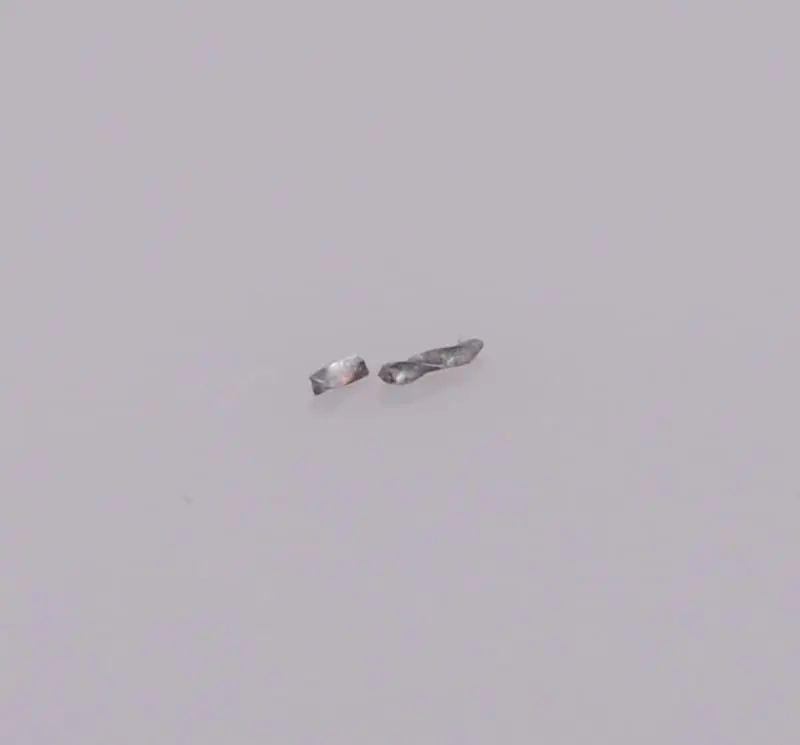
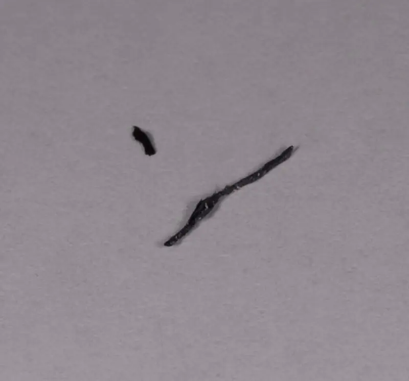
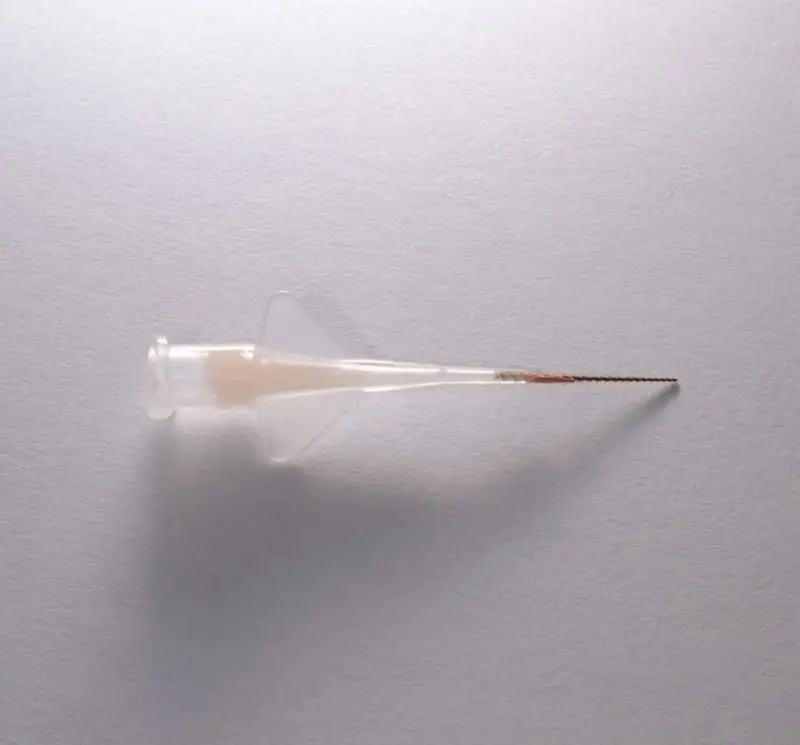

Rozezná nejjemnější struktury a detaily, ošetření je přesnější, kvalitnější a také trvanlivější. Mikroskop je schopen odhalit i skryté vady, a tím předejít pozdějším komplikacím.
Mikroskopické vyšetření zubů se využívá ve všech odvětvích stomatologie. Při ošetření kazů (kontrola odstranění kazu, kontrola kvality dentinu pod výplní, adaptace výplně, odhalení netěsností, tvar výplně apod.), v protetice (přesnost preparace, kontrola dosedu, finální leštění), zubní chirurgii (vizualizace kořenů zubu, urychlení hojení a zlepšení pooperační kondice pacienta), v endodoncii (vizualizace tvaru kořenového kanálu, přídatných kanálků a mikroprasklin, odstranění zalomených nástrojů a ucpávek kořenových kanálků, kvalita zaplnění).
A právě při ošetřování kořenových kanálků je mikroskopické vyšetření nezbytné. Kořenový systém zubů je velmi členitý a tvoří velice spletitou strukturu zubu.
Odkazuji na web společnosti ProMikro, které jsem členem a kde najdete řadu zajímavých informací.
Endodoncie – ošetření kořenových kanálků
Endodoncie je jednou ze specializací stomatologie (zubního lékařství) a zabývá se zubní dření a tkáněmi zubních kořenů. Nejčastějším zákrokem endodontistů je ošetřování kořenových kanálků. Endodontická léčba je nutná v případech poškození zubní dřeně, neboť hrozí ztráta zubu.




Endodontické vyšetření
Jedná se o ošetření vnitřního prostoru zubu, které je nutné při probíhajícím patologickém procesu v zubní dřeni (zánět, odumření dřeně vlivem kazu či úrazu). Jeho cílem je prevence a vyléčení bakteriální infekce, odstranění infikované tkáně a zachování funkčnosti poškozeného zubu, i v případě, že z něj bude mrtvý zub.
Onemocnění zubní dřeně se projevuje různě, záleží na stupni postižení. Může se objevit akutní bolest, chronicky klidný, či bolestivý “váček” (patrný na rentgenu), píštělí i otokem. Kromě silné bolesti dochází i k postupnému odumření nervově-cévního svazku, pulpy (zubní dřeň), rozšíření infekce odvodnou cévou do okolních struktur a vzniká reaktivní zánět.
Samotné ošetření zubního kanálku je náročné na přístrojové vybavení, materiál a čas a schopnosti lékaře. Probíhá pod operačním mikroskopem. Celková doba ošetření se pohybuje kolem dvou až tří hodin minimálně a spočívá v pročištění, mechanickém opracování, opakované desinfekci, vysušení a zaplnění vnitřního prostoru kořene. Pro zlepšení prognózy ošetření používáme vždy kofferdam, který umožňuje použití desinfekce o vyšší koncentraci i teplotě. Při kvalitním opracování, pročištění kořene a 3D zaplnění kanálku je prognóza ošetření kolem 90 %. Pokud není přítomen výrazný zánět, jedná se o naprosto bezbolestné ošetření.
cena Endodoncie: od 8 000 Kč
Reendodoncie – opětovné ošetření kořenových kanálků
Reendodoncie je revize ošetření kořenových kanálků. Reendodontické ošetření se provádí v případech, kdy předešlé ošetření kořenových kanálků nebylo stoprocentně úspěšné a zub je opět infikován bakteriemi. Příčinou může být nedokonalé pročištění kanálků, opomenutí některého z kanálků, pozitivní nález, nekvalitní kořenová výplň, zalomený fragment kořenového nástroje, ale i zastaralý způsob endodontického ošetření.
Ač je možné pokusit se o opětovné zprůchodnění kanálků a sekundární léčbu zubu, procento úspěšnosti klesá s rostoucím počtem potenciálních komplikací. Jednou z nich, a bohužel stále velmi běžnou, je zalomení nástroje uvnitř kořenového kanálku zubu během prvotního endodontického ošetření. Je možné se pokusit o odstranění fragmentu nástroje a dokončení zákroku lege artis (překl. z lat. dle lékařského umění).
Použití operačního mikroskopu, cílených diagnostických a zobrazovacích metod (rentgen, CBCT, ultrazvuk), speciálních rotačních a ručních Ni-Ti nástrojů, sekvencí výplachových protokolů a 3D metod plnění nám umožňuje veškerá rizika minimalizovat, a tím dosahovat lepších a lepších výsledků. I přesto je však takto ošetřený mrtvý zub oslabený, proto doporučujeme jej ošetřit adhezivní náhradou (podle míry destrukce inlay, nebo korunka).
Reendodoncie je poslední pokus o zachování zubu, který ale nemusí být úspěšný. Proto je třeba zvážit veškerá pro a proti. Alternativou re/endodoncie je exodoncie, vytažení mrtvého zubu a doplnění mezery implantátem.
cena Reendodoncie: od 10 000 Kč (dle časové náročnosti)




